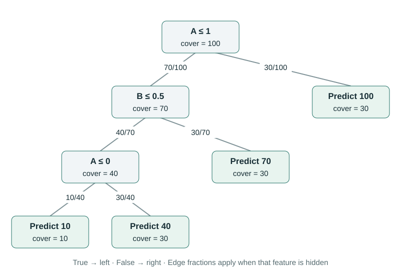

When a Tree Splits on the Same Feature Twice
A feature is one participant in the Shapley calculation, regardless of how many times the tree splits on it. Revealing age, for example, reveals the same age at every node that tests age. We must not treat two age thresholds as two independently revealable inputs.
The leaf method from the previous chapter makes this easy to see: combine every condition involving the same feature before forming the polynomial. We will use a new numeric example so the repeated threshold is visible.
A path that tests A twice
In this tree, A is a numeric input and B is binary. Explain A = 0.5, B = 0. The customer-group interpretation from the first tree no longer applies; these are simply two inputs in a separate arithmetic example.


Follow the known row: A ≤ 1 is true, B ≤ 0.5 is true, and A ≤ 0 is false. The final prediction is 40. With everything hidden, the leaf covers give the baseline $0.1\times10+0.3\times40+0.3\times70+0.3\times100=64$.
Merge repeated conditions along each leaf path
Focus on the 40 leaf. When A is hidden, the first A split retains 70/100 of the weight. The later A split retains 30/40. Multiply them to obtain A’s combined hidden fraction:
When A is revealed as 0.5, it satisfies both path conditions. Its combined revealed fraction is $1\times1=1$. B’s hidden fraction is 40/70, or 4/7, and its revealed fraction is also one.
The complete hidden weight of this leaf is $(21/40)(4/7)=3/10$, matching its cover of 30 out of 100. Grouping the A terms changes the organization, not the product. But it now ensures that all A conditions switch from hidden to revealed together.
| Distinct feature | Hidden fraction | Revealed fraction |
|---|---|---|
| A | 21/40 | 1 |
| B | 4/7 | 1 |
For another customer with A = −1, the first A condition would hold and the second would fail. The combined revealed fraction would be $1\times0=0$, correctly ruling out the 40 leaf. “Revealed” means checking every condition on that feature, not keeping whichever test happens to be convenient.
Verify with the four real feature groups
Only two features exist, so there are four valid revealed groups. Revealing A = 0.5 sends us left at the root and fixes the later A split at 40, while B still averages its two branches. Revealing only B = 0 follows B wherever it is reached but leaves both A splits weighted by covers.
| Group | Calculation | Value |
|---|---|---|
| None | 0.1 × 10 + 0.3 × 40 + 0.3 × 70 + 0.3 × 100 | 64 |
| A | (4/7) × 40 + (3/7) × 70 | 370/7 ≈ 52.857143 |
| B | 0.7 × (0.25 × 10 + 0.75 × 40) + 0.3 × 100 | 52.75 |
| A, B | Follow the known row | 40 |
A’s contributions in the two possible orders are $370/7-64$ and $40-52.75$. Their average is $-669/56$, approximately −11.946429. B receives $-675/56$, approximately −12.053571. They add to −24, taking the baseline of 64 down to 40.
Each negative value describes a downward share relative to this tree’s reference baseline. Neither is a statement that increasing its input would always decrease the prediction.
Why separate split players solve the wrong problem
If we named the two A occurrences A₁ and A₂, we would create eight groups instead of four. Some groups would reveal A₁ but hide A₂. Such a group cannot represent knowledge of the original input: once A = 0.5 is known, both thresholds can be evaluated.
Computing Shapley values for that artificial three-player game and adding the two A allocations afterward is not generally equivalent to explaining the original two-feature game. Grouping contributions after allocation does not undo the different set of possible reveal orders.
The correct approach groups A’s conditions before calculating the Shapley weights. The number d in the leaf formula is the number of distinct features on the path, not the number of split nodes.
How this relates to extend and unwind
In the recursive TreeSHAP implementation, extending a path updates its weighted accounting when a split is visited. If that feature already appears on the path, its earlier entry must first be removed from that accounting. The new entry combines the earlier fractions with the current split’s fractions.
This is the purpose of the repeated-feature unwind step. It does not erase the older condition from the model. It removes an outdated bookkeeping entry so the same feature is represented once, with both conditions included.
Our implementation collects the combined fractions in a dictionary keyed by feature index. At a new occurrence, it multiplies the old hidden fraction by the branch’s cover ratio and the old revealed fraction by whether this row follows that branch. After reaching a leaf, it builds a polynomial from the dictionary’s distinct features.
old_z, old_o = factors.get(feature, (1, 1))
factors[feature] = (
old_z * child_cover / parent_cover,
old_o * int(customer_follows_this_branch),
)This short excerpt describes the calculation; the complete script copies the dictionary separately for each child and uses exact fractions. It checks repeated-feature cases against exhaustive subsets, including inputs that go down different routes.
For the original array-based operations, see SHAP’s reference implementation. We have now handled the main tree-structure complication. Next we will examine a choice that changes the explanation itself: how unknown features are averaged.